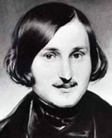

(1809 – 1852)

"Rus gerçekçiliğinin altın çağı" olarak adlandırılan dönemi başlatan yazar olarak kabul edilen Gogol, kendisi Puşkin'den etkilenmiş olsa da kendinden sonraki birçok yazarı derinden etkilemiştir. Onun en bilinen ve sevilen öyküsü olan "Palto" için dâhi yazar Dostoyevski bile "Hepimiz Gogol'un 'Palto'sundan çıktık" diyecektir...
Nikolay Vasilyeviç Gogol orta halli toprak sahibi bir ailenin çocuğu olarak 31 Mart 1809'da Ukrayna'da, Soroçinski Köyü'nde dünyaya geldi. Gogol'un çocukluğu köy hayatı içinde ve yoğun Kazak kültürü etkisinde geçti. Bu hayatın etkisi, ileride yazacağı eserlere de yansıdı. Yazarın iç dünyasını çok etkileyen bir başka olay da küçük kardeşi İvan'ın Gogol on yaşındayken ölmesidir.
1821-28 yılları arasında Nehzin Lisesi'ne giden Gogol hem okul dergisinde yazılar yazdı hem de okul tiyatrosunun etkinliklerine katıldı. 1828'de Petersburg'a gitti. Orada memur olmayı düşündü, ancak işler umduğu gibi gitmedi. Gogol Petersburg'dan Almanya'ya geçti, ancak orada da parası bitene kadar kalabildi. Tekrar Petersburg'a dönüp iş arayan Gogol bu sefer çok düşük bir maaşla da olsa devlet memuru olarak çalışmaya başladı, ama bu görevden bir sene sonra ayrıldı.
1834-35 yıllarında Saint Petersburg Üniversitesi'nde Dünya Tarihi kürsüsünde asistan olan Gogol, bu işten ayrıldıktan sonra Taras Bulba ve İvan İvanoviç İvan Nikiforoviç'le Nasıl Kavga Etti? öykülerini yayımladı. 1836'da Sovremennik adlı dergide yergili öykülerinin en neşelilerinden biri olan Araba ile eğlenceli ve iğneleyici bir üslupla yazılmış gerçeküstücü öyküsü Burun'u yayınladı.
Gogol'un ilk ciddi ve dikkat çeken eserleri Ukrayna hayatı ve halk deyişleri ile süslü halk hikayeleridir. Gogol 1831-1832 yıllarında yazdığı bu öyküleri Dilanka Yakınlarındaki Çiftlikte Akşam Toplantıları adlı kitapta topladı. Bu öyküler, Rus edebiyat dünyasında Gogol'un bir anda parlamasına yol açtı. 1835 yılında Mirgorod ve Arabeski adlı eserlerini de yayımladı. Bu kitaplarında da halk hikayelerini, özellikle de Kazak geçmişini işledi.
Büyük komedisi Müfettiş'te bürokrasiyi yeren Gogol, eserinin sahnelenmesi ile tüm şimşekleri üzerine çekti. Tepkiler yüzünden Rusya'dan ayrılmak zorunda kaldı. Roma'da Puşkin'in tavsiyesi ile en büyük eseri olan Ölü Canlar'ı yazarken Puşkin'in öldüğü haberini aldı. Gogol için bu haber gerçekten bir yıkım olmuştu. Puşkin'in ölümünün yıkıcı etkisine karşın 1842 yılında iki önemli eseri olan Ölü Canlar'ın ilk cildini ve uzun hikayesi Palto'yu bitirdi ve yayımladı. Ölü Canlar, dönemin Rusya'sının çürümüşlüğünü gerçekçi bir biçimde gözler önüne sererken Palto'da sıradan insanların yaşadıkları acılar, maruz kaldıkları haksızlıklar ve yoksulluk tüm gerçekliğiyle, okuyucuyu sarsacak bir ustalıkla gözler önüne serildi. Bu eser de dönemin en büyük eserlerinden biri olarak nitelendirildi. Rus edebiyatında sıradan insanların ve yaşadıklarının gerçekçi bir bakış açısıyla yansıtıldığı ilk kitaplardan biri oldu. Ancak öyküsünün yayınlaması ile Gogol, soylu kesimin tepkisini tekrar üzerine çekti. Dönem, aydınlar üzerinde büyük baskıların uygulandığı karanlık I. Nikola dönemidir. Gogol düzen savunucuları tarafından Rus insanını aşağılamakla, onun kötü yönlerini göstermekle ve halkına ihanetle suçlandı.
Puşkin'in ölümünden sonra Gogol'un ünü daha da da arttı. Özellikle bu dönemde bu ilgi Gogol'da bir öncülük hissi yarattı ve yazar kendine toplumu değiştirmek, insanlara yol göstermek gibi görevler edindi. Dine karşı ilgisi arttı ve daha önce eleştirdiği kiliseyi övmeye bile başladı. Bu davranış hayranlarının tepkisini çekti ancak o, bu tepkilere dinsel yorumlar kattı. 1848'de kutsal toprakları ziyaret etmek için Kudüs'e gitti. Moskova'ya geri dönen Gogol 1852 yılında tamamlamış olduğu Ölü Canlar romanının ikinci bölümünün el yazmalarını orada gerici bir rahibin etkisi ile yakarak imha etti. Edebiyat dünyasına çok şey kaybettiren bu davranışından on gün sonra, 4 Mart 1852 tarihinde Moskova'da öldü ve Novo Deviçi Mezarlığı'na gömüldü.
Seçme Romanları: Akşam Toplantıları (1832 – Türkiye İş Bankası Yayınları, 2006), Bir Delinin Anıları – Palto – Burun – Petersburg Öyküleri – Fayton, (1835 – Türkiye İş Bankası Yayınları, 2010), Eski Zaman Beyleri (1835), Taras Bulba (1835 – Türkiye İş Bankası Yayınları, 2010), Müfettiş (1836), Ölü Canlar (1842 – Türkiye İş Bankası Yayınları, 2010)